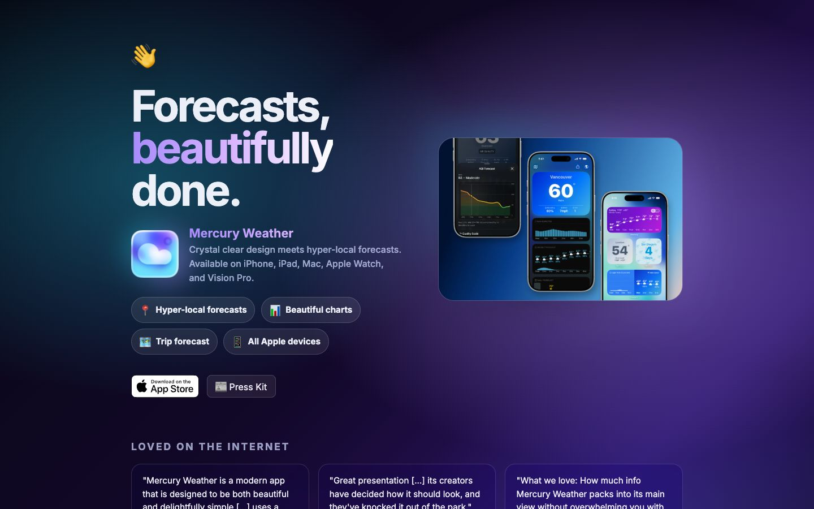

References / Website / 252
Mercury Weather website
A weather app’s page with translucent chips and quote cards, edged in thin light lines, over a dark teal and violet glow.
- Source
- mercuryweather.app
- Style
- Glassmorphism (agent-proposed, not yet reviewed by a person)
- Moods
- Luminous, calm, premium
- Evidence
- Captured with
tools/capture.mjs(headless Chrome, 1440 × 900) on 28 September 2026 and inspected. Nothing covers the page. - Reviewed
- Rights
- Third-party work, stored with credit for commentary. License: unverified. Rights policy
Observed
- The background is a dark glow: teal at the upper left, deep violet on the right, and near-black at the edges.
- Four feature chips (‘Hyper-local forecasts’, ‘Beautiful charts’, ‘Trip forecast’, ‘All Apple devices’) are dark translucent pills with a thin light border.
- A rounded panel on the right holds three phone screenshots over a blue gradient.
- Three quote cards at the bottom are translucent, rounded, and edged with a thin light line.
- The headline is a heavy sans-serif in white with the word ‘beautifully’ in lilac. The App Store badge is a solid white button.
Why it belongs
It passes the radius, border, border-width, and gradient metrics: 80 % of boxes have a 1 px border, the median radius is 18 px, and 40 % of boxes use a backdrop blur. Its chromatic share of 0.33 is close to the threshold because the glow is dark.
Borrow
For dark glass, use a 1 px light border at low opacity on every chip and card, and let one teal and one violet glow provide the color.
Measured
Machine-extracted by tools/extract-traits.js on . Full measurement.
- Type families
- Inter (100%)
- Type scale ratio
- 1.22
- Median radius
- 18 px
- Mean chroma
- 0.17
- Palette
- #05060f 32%
- #a78bfa 17%
- #120829 16%
- #2b1364 16%
- #ffffff 14%
- #d0d8ff 5%
- #d8b4fe 1%

